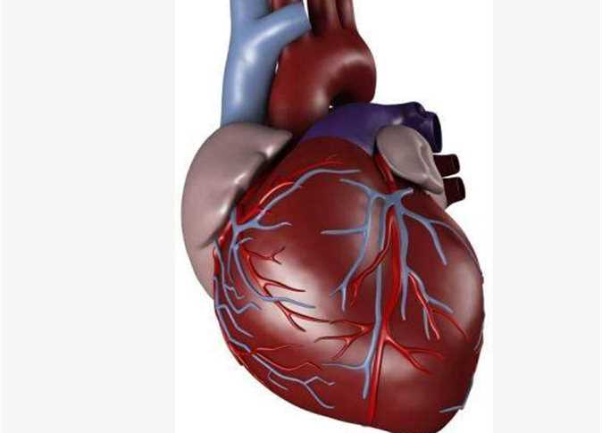

The Heart
organ that serves as a pump to circulate the blood. It may be a straight tube, as in spiders and annelid worms, or a somewhat more elaborate structure with one or more receiving chambers (atria) and a main pumping chamber (ventricle), as in mollusks. In fishes the heart is a folded tube, with three or four enlarged areas that correspond to the chambers in the mammalian heart. In animals with lungs—amphibians, reptiles, birds, and mammals—the heart shows various stages of evolution from a single to a double pump that circulates blood (1) to the lungs and (2) to the body as a whole. In humans and other mammals and in birds, the heart is a four-chambered double pump that is the centre of the circulatory system. In humans it is situated between the two lungs and slightly to the left of centre, behind the breastbone; it rests on the diaphragm, the muscular partition between the chest and the abdominal cavity. The heart consists of several layers of a tough muscular wall, the myocardium. A thin layer of tissue, the pericardium, covers the outside, and another layer, the endocardium, lines the inside. The heart cavity is divided down the middle into a right and a left heart, which in turn are subdivided into two chambers. The upper chamber is called an atrium (or auricle), and the lower chamber is called a ventricle. The two atria act as receiving chambers for blood entering the heart; the more muscular ventricles pump the blood out of the heart. human human heart Explore the human heart and how the cardiovascular system help circulate blood throughout the Explore the human heart and how the cardiovascular system help circulate blood throughout the bodySee all videos for this article The heart, although a single organ, can be considered as two pumps that propel blood through two different circuits. The right atrium receives venous blood from the head, chest, and arms via the large vein called the superior vena cava and receives blood from the abdomen, pelvic region, and legs via the inferior vena cava. Blood then passes through the tricuspid valve to the right ventricle, which propels it through the pulmonary artery to the lungs. In the lungs venous blood comes in contact with inhaled air, picks up oxygen, and loses carbon dioxide. Oxygenated blood is returned to the left atrium through the pulmonary veins. Valves in the heart allow blood to flow in one direction only and help maintain the pressure required to pump the blood. The low-pressure circuit from the heart (right atrium and right ventricle), through the lungs, and back to the heart (left atrium) constitutes the pulmonary circulation. Passage of blood through the left atrium, bicuspid valve, left ventricle, aorta, tissues of the body, and back to the right atrium constitutes the systemic circulation. Blood pressure is greatest in the left ventricle and in the aorta and its arterial branches. Pressure is reduced in the capillaries (vessels of minute diameter) and is reduced further in the veins returning blood to the right atrium. electrical conduction in the heart Listen to an exposed human heartbeat during open-heart surgery Listen to an exposed human heartbeat during open-heart surgerySee all videos for this article The pumping of the heart, or the heartbeat, is caused by alternating contractions and relaxations of the myocardium. These contractions are stimulated by electrical impulses from a natural pacemaker, the sinoatrial, or S-A, node located in the muscle of the right atrium. An impulse from the S-A node causes the two atria to contract, forcing blood into the ventricles. Contraction of the ventricles is controlled by impulses from the atrioventricular, or A-V, node located at the junction of the two atria. Following contraction, the ventricles relax, and pressure within them falls. Blood again flows into the atria, and an impulse from the S-A starts the cycle over again. This process is called the cardiac cycle. The period of relaxation is called diastole. The period of contraction is called systole. Diastole is the longer of the two phases so that the heart can rest between contractions. In general, the rate of heartbeat varies inversely with the size of the animal. In elephants it averages 25 beats per minute, in canaries about 1,000. In humans the rate diminishes progressively from birth (when it averages 130) to adolescence but increases slightly in old age; the average adult rate is 70 beats at rest. The rate increases temporarily during exercise, emotional excitement, and fever and decreases during sleep. Rhythmic pulsation felt on the chest, coinciding with heartbeat, is called the apex beat. It is caused by pressure exerted on the chest wall at the outset of systole by the rounded and hardened ventricular wall.
The rhythmic noises accompanying heartbeat are called heart sounds. Normally, two distinct sounds are heard through the stethoscope: a low, slightly prolonged “lub” (first sound) occurring at the beginning of ventricular contraction, or systole, and produced by closure of the mitral and tricuspid valves, and a sharper, higher-pitched “dup” (second sound), caused by closure of aortic and pulmonary valves at the end of systole. Occasionally audible in normal hearts is a third soft, low-pitched sound coinciding with early diastole and thought to be produced by vibrations of the ventricular wall. A fourth sound, also occurring during diastole, is revealed by graphic methods but is usually inaudible in normal subjects; it is believed to be the result of atrial contraction and the impact of blood, expelled from the atria, against the ventricular wall. Heart “murmurs” may be readily heard by a physician as soft swishing or hissing sounds that follow the normal sounds of heart action. Murmurs may indicate that blood is leaking through an imperfectly closed valve and may signal the presence of a serious heart problem. Coronary heart disease, in which an inadequate supply of oxygen-rich blood is delivered to the myocardium owing to the narrowing or blockage of a coronary artery by fatty plaques, is a leading cause of death worldwide. Biomarker, a measurable and quantifiable biological parameter that serves as an indicator of a particular physiological state. In a medical context, a biomarker is a substance whose detection indicates a particular disease state or a response to a therapeutic intervention. Examples include the presence of specific pathological entities, cytological or histological characteristics, genetic mutations, or proteins. Alterations at the level of messenger ribonucleic acid (mRNA) and protein expression may also serve as biomarkers. Decades of research have produced molecular markers that serve as tools for health-related assessments, epidemiologic studies, and the diagnosis of disease, ranging from cancer to cardiovascular, neurological, and inflammatory diseases. The ability to effectively treat and cure a disease is often directly dependent on the capability to detect it at its earliest stage. Especially for cancer, there has been a great need to improve early diagnostics, since the disease is often diagnosed in advanced stages, which delays timely treatment and can lead to a poor prognosis. Increasing interest in assessing cancer risk, monitoring disease, predicting recurrence, and determining the efficacy of treatments has coincided with developments in the fields of genomics and proteomics. As a result, molecules associated with different types of cancers have been uncovered with a variety of technologies, including DNA and tissue microarray, two-dimensional gel electrophoresis, mass spectrometry, and protein assays coupled with advanced bioinformatic tools. For clinical implementation and routine use, the ideal biomarker is highly specific for a particular disease condition and is measurable in easily accessible body fluids, such as saliva, serum, or urine. Thus, a cancer biomarker, for example, may be associated with a specific response of the body to cancer, or it may be a substance secreted by the malignancy itself and easily detected in a body fluid. Examples of routinely used cancer biomarkers include CA 15–3 (breast cancer), CA 125 (ovarian cancer), and PSA (prostate cancer). Clinically reliable biomarkers, however, are rare, and most candidate biomarkers are found in many different types of disease. To refine the discovery process, biomarker pattern proteome analysis can be used to study the expression profiles of hundreds of proteins in parallel. Thus, several relatively nonspecific biomarkers can be combined in order to provide a more specific disease index. A platform that holds special promise for the discovery of biomarkers combines protein arrays with SELDI-TOF-MS (surface-enhanced laser desorption/ionization time-of-flight mass spectrometry). This approach distinguishes between disease and disease-free states by allowing for the analysis of complex protein mixtures and expression differences between proteins. Applying computational methods, the generated multiple proteomic spectra are superimposed to detect changes in protein expression and their association with disease conditions
René Laënnec, in full René-Théophile-Hyacinthe Laënnec, (born February 17, 1781, Quimper, Brittany, France—died August 13, 1826, Kerlouanec), French physician who invented the stethoscope and perfected the art of auditory examination of the chest cavity. When Laënnec was five years old, his mother, Michelle Félicité Guesdon, died from tuberculosis, leaving Laënnec and his brother, Michaud, in the incompetent care of their father, Théophile-Marie Laënnec, who worked as a civil servant and had a reputation for reckless spending. In 1793, during the French Revolution, Laënnec went to live with his uncle, Guillaume-François Laënnec, in the port city of Nantes, located in the Pays de la Loire region of western France. Laënnec’s uncle was the dean of medicine at the University of Nantes. Although the region was in the midst of counterrevolutionary revolts, the young Laënnec settled into his academic training and, under his uncle’s direction, began his medical studies. His first experience working in a hospital setting was at the Hôtel-Dieu of Nantes, where he learned to apply surgical dressings and to care for patients. In 1800 Laënnec went to Paris and entered the École Pratique, studying anatomy and dissection in the laboratory of surgeon and pathologist Guillaume Dupuytren. Dupuytren was a bright and ambitious academic who became known for his many surgical accomplishments and for his work in alleviating permanent tissue contracture in the palm, a condition later named Dupuytren contracture. While Dupuytren undoubtedly influenced Laënnec’s studies, Laënnec also received instruction from other well-known French anatomists and physicians, including Gaspard Laurent Bayle, who studied tuberculosis and cancer; Marie-François-Xavier Bichat, who helped establish histology, the study of tissues; and Jean-Nicolas Corvisart des Marets, who used chest percussion to assess heart function and who served as personal physician to Napoleon I.
Laënnec became known for his studies of peritonitis, amenorrhea, the prostate gland, and tubercle lesions. He graduated in 1804 and continued his research as a faculty member of the Society of the School of Medicine in Paris. He wrote several articles on pathological anatomy and became devoted to Roman Catholicism, which led to his appointment as personal physician to Joseph Cardinal Fesch, half brother of Napoleon and French ambassador to the Vatican in Rome. Laënnec remained Fesch’s physician until 1814, when the cardinal was exiled after Napoleon’s empire fell. While Laënnec’s embrace of Catholic doctrine was viewed favourably by royalists, many in the medical profession criticized his conservatism, which contradicted the views of many academicians. Nonetheless, Laënnec’s restored faith inspired him to find better ways to care for people, especially the poor. From 1812 to 1813, during the Napoleonic Wars, Laënnec took charge of the wards in the Salpêtrière Hospital in Paris, which was reserved for wounded soldiers. After the return of the monarchy, in 1816 Laënnec was appointed as physician at the Necker Hospital in Paris, where he developed the stethoscope. stethoscope stethoscope Laënnec’s original stethoscope design consisted of a hollow tube of wood that was 3.5 cm (1.4 inches) in diameter and 25 cm (10 inches) long and was monoaural, transmitting sound to one ear. It could be easily disassembled and reassembled, and it used a special plug to facilitate the transmission of sounds from the patient’s heart and lungs. His instrument replaced the practice of immediate auscultation, in which the physician laid his ear on the chest of the patient to listen to chest sounds. The awkwardness that this method created in the case of women patients compelled Laënnec to find a better way to listen to the chest. His wooden monoaural stethoscope was replaced by models using rubber tubing at the end of the 19th century. Other advancements include the development of binaural stethoscopes, capable of transmitting sounds to both ears of the physician. In 1819 Laënnec published De l’auscultation médiate (“On Mediate Auscultation”), the first discourse on a variety of heart and lung sounds heard through the stethoscope. The first English translation of De l’auscultation médiate was published in London in 1821. Laënnec’s treatise aroused intense interest, and physicians from throughout Europe came to Paris to learn about Laënnec’s diagnostic tool. He became an internationally renowned lecturer. In 1822 Laënnec was appointed chair and professor of medicine at the College of France, and the following year he became a full member of the French Academy of Medicine and a professor at the medical clinic of the Charity Hospital in Paris. In 1824 he was made a chevalier of the Legion of Honour. That same year Laënnec married Jacquette Guichard, a widow. They did not have any children, his wife having suffered a miscarriage. Two years later at the age of 45 Laënnec died from cavitating tuberculosis—the same disease that he helped elucidate using his stethoscope. Using his own invention, he could diagnose himself and understand that he was dying. Because Laënnec’s stethoscope enabled heart and lung sounds to be heard without placing an ear on the patient’s chest, the stethoscope technique became known as the “mediate” method for auscultation. Throughout Laënnec’s medical work and research, his diagnoses were supported with observations and findings from autopsies. In addition to revolutionizing the diagnosis of lung disorders, Laënnec introduced many terms still used today. For example, Laënnec’s cirrhosis, used to describe micronodular cirrhosis (growth of small masses of tissue in the liver that cause degeneration of liver function), and melanose (Greek, meaning “black”), which he coined in 1804 to describe melanoma. Laënnec was the first to recognize that melanotic lesions were the result of metastatic melanoma, in which cancer cells from the original tumour site spread to other organs and tissues in the body. He is considered the father of clinical auscultation, and he wrote the first descriptions of pneumonia, bronchiectasis, pleurisy, emphysema, and pneumothorax. His classification of pulmonary conditions is still used today.
Echocardiography, diagnostic technique that uses ultrasound (high-frequency sound waves) to produce an image of the internal structures of the heart. A piezoelectric transducer placed on the surface of the chest emits a short burst of ultrasound waves and then measures the reflection, or echo, of the sound as it bounces back from cardiac structures such as the heart valves and the muscle wall. The transducer does this by converting electrical impulses into a narrow ultrasonic beam that penetrates body tissues. The reflected sound waves are detected by a receiver that is also placed on the chest. The waves are transformed back into electrical impulses and are projected on the screen of a cathode-ray oscilloscope. The reflected sound waves indicate places where changes in tissue density occur. As a result, echoes from varied depths produce an image of the walls and valves of the heart and of their motions. Such information is used to evaluate chamber size, wall thickness, and valve structure. The procedure can aid in diagnosing valve disease (e.g., endocarditis and mitral valve prolapse), congenital heart diseases, intracardiac tumours, and other cardiac abnormalities. Return to previous page